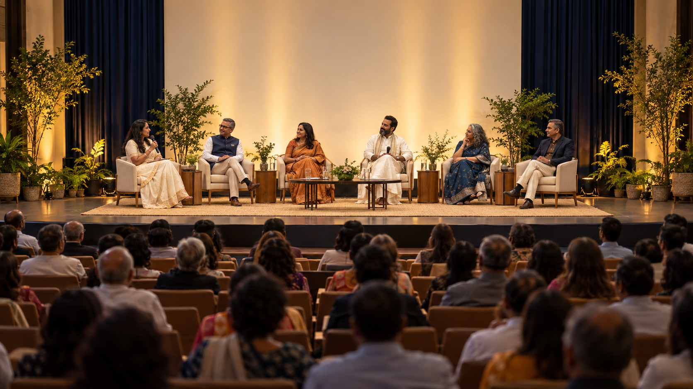
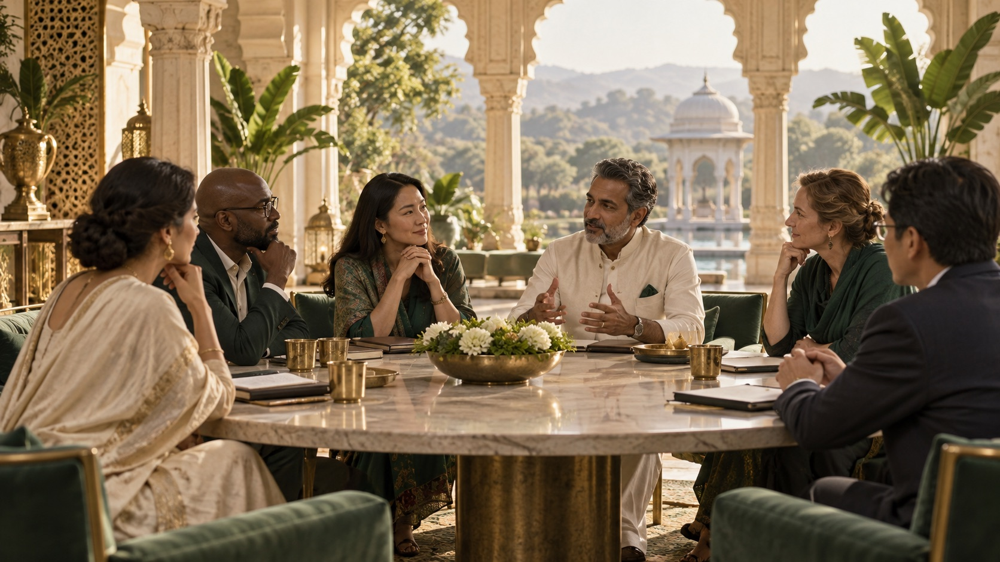
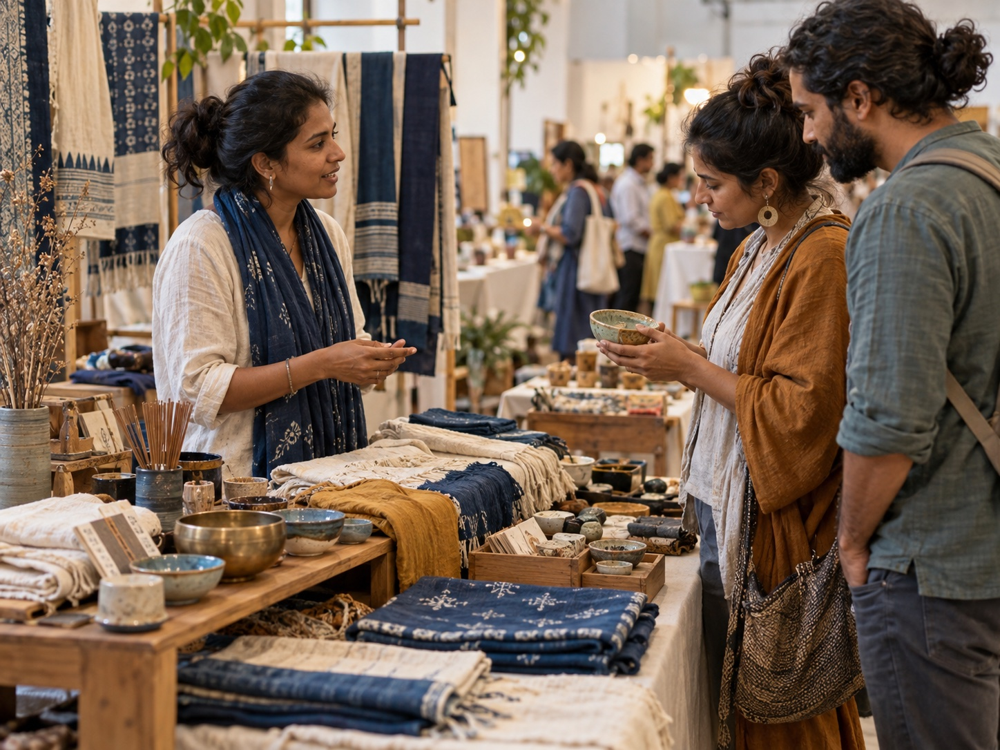
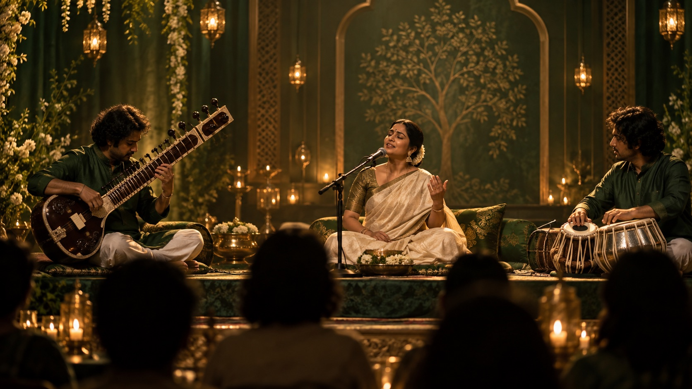
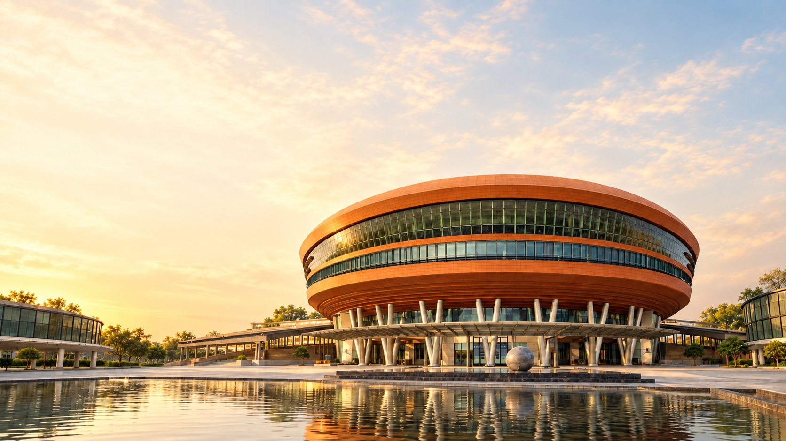

Inner peace
Self-discovery, mindfulness, and connection with inner wisdom.
TIMES INTERNET LIMITED PRESENTS
SHANTI MANTHAN
A global convergence of spiritual wisdom, conscious leadership, sacred arts, and collective dialogue.
ABOUT WSS
A global confluence where spirituality meets leadership and culture, uniting spiritual masters, visionary thinkers, and impactful institutions in a shared pursuit of higher consciousness.
Through dialogue, discovery, and human connection, the World Spirituality Summit invites a collective movement toward peace, purpose, and a more awakened world.
About the summitVOICES OF THE SUMMIT
Learn from spiritual teachers and thought leaders shaping conversations around mindfulness, leadership, and human connection.
Illustrative summit setting
YOUR WSS EXPERIENCE
Explore curated experiences designed to deepen awareness, learning, and connection.

01 · Plenary sessionsKeynote addresses and conversations with spiritual luminaries and thought leaders.

02 · Soul BazaarDiscover mindful enterprise, artisanal craft, and ideas for a more conscious life.

03 · Musical eveningsSacred sound and cultural experiences that bring people together.
THE TWO-DAY JOURNEY
Move from self-awareness to collective understanding.
Self-discovery, mindfulness, and connection with inner wisdom.
Conscious living, compassionate leadership, and interfaith understanding.
Collective consciousness, unity, and peaceful coexistence.
THE VENUE
World Spirituality Summit 2026 takes place at Bharat Mandapam, Pragati Maidan.
Plan your visit
SHANTI MANTHAN · WORLD SPIRITUALITY SUMMIT
Register your interest in attending. Ticket information will be shared soon.